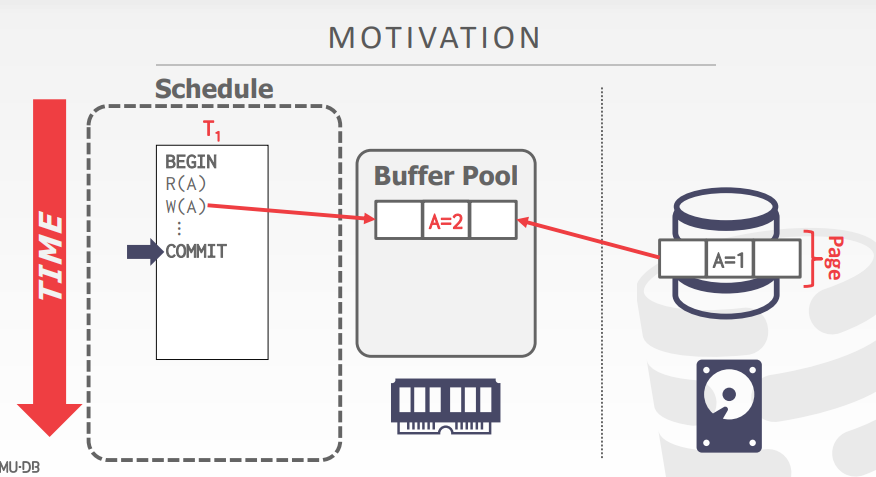
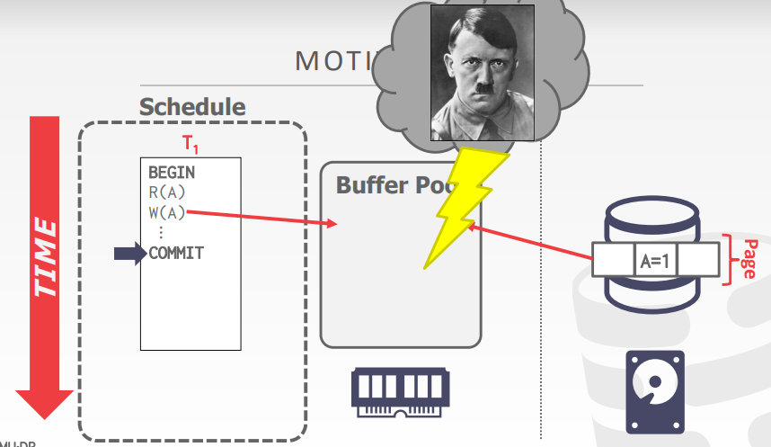
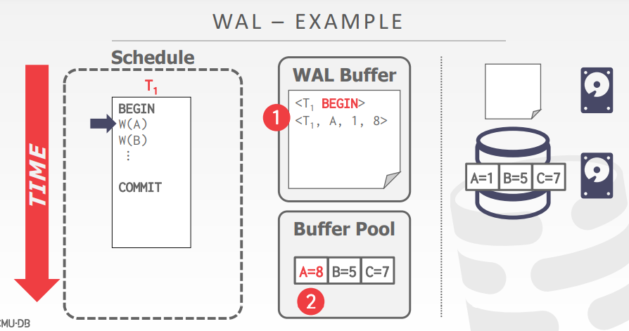
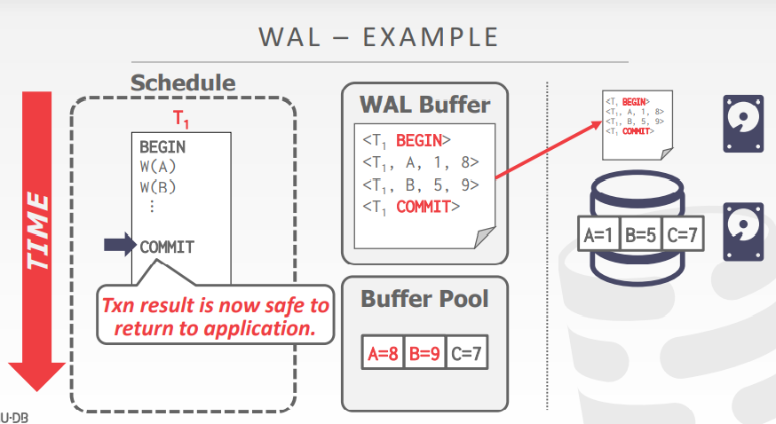
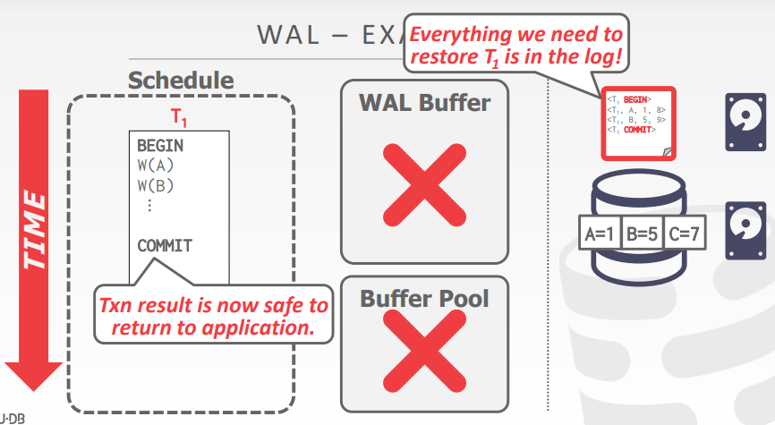

Motivation
从事务的角度来说，事务commit之后，使用者就会认为处理好的数据就被放到硬盘上了（并不管底层是如何实现的）
但实际上，出于对性能的考量（硬盘和磁盘的访问速度有明显差距）
实时修改的数据页是不会立刻写入到磁盘上的
而是优先放到内存中的（至于什么时候数据才能落盘，会根据不同的置换策略对内存上的数据进行写入）
因此，如果修改好的数据只保存在了内存中，而并没有写入到磁盘上
那么当内存遭到破坏时（比如说断电、希特勒打仗等突发情况）
就会造成事务数据的丢失
因此需要DBMS的recovery机制
Crash recovery
故障恢复算法是为了确保数据库一致性，事务的原子性和面对故障时数据的持久性的一种技术
故障恢复算法主要分为两部分：
第一部分：在正常的事务处理阶段添加一些操作，使得DBMS可以在故障发生时对数据进行恢复（防患于未然；本章的重点）
第二部分：在数据库故障发生时执行一些操作，以此维护数据库的原子性、一致性和持久性（利用上一个部分所添加的操作，维护DBMS的ACID特性）
思考：
DBMS的不同组件是依赖于在不同的存储器
比如说缓存是放到内存上的（易失性存储，但访问速度快），而数据一般是放在硬盘上的（非易失性存储，但能持久化数据）
因此，DBMS需要对不同类型的故障进行分类，从而针对不同故障给出应对处理

Failure classification
Transaction failure
事务级别的故障，是正常运行的过程中不可避免的
是DBMS的开发者必须要考虑的
逻辑错误
事务因为某些原因不能完整的执行下去
例如：用户发出rollback指令、事务执行的过程中违背了完整性约束、又或是说并发控制协议（比如OCC）发生了冲突，从而造成事务回滚
内部状态错误
- DBMS发现内部状态错误（比如事务间的死锁），必须终止某个活跃的事务
System failure
系统级别的故障，比如当数据还在内存的时候，就发生了硬件故障，导致内存中的数据消失了
也是DBMS的开发者需要考虑的
软件故障
- OS、DBMS本身的故障（例如：DBMS未捕获的除零异常）
硬件故障
- 存储数据库的电脑崩溃（例如：断电、CPU损坏）
- 硬件故障的前提是：非易失性存储（硬盘）上的数据不会因为系统崩溃而损坏
- PS：硬盘故障属于Storage media failure
Storage media failure
存储媒介的故障，比如说SSD、HHD等存储介质出现了问题
或是说磁盘的磁头崩溃，破坏了全部或部分非易失性存储
这种故障属于无法修复的硬件故障，是不可恢复的
但另一方面，这类故障是可以被检测出来的（例如：磁盘控制器可以使用校验和来检测故障）
因此这种故障在设计数据库的时候，不会考虑这类问题（当然可以在数据库运维的时候可以备份多份数据，实现容灾）
Observation
DBMS的主要数据都存储在了非易失性存储器上
但是非易失性存储器（例如磁盘）的读取效率远慢于易失性存储器
因此，为了高效的利用易失性存储，实际的读取数据流程：
- 首先将目标数据读取到内存中
- 然后在内存中对数据进行修改
- 最后将修改过的数据放回磁盘中
但另一方面，DBMS还需要对使用者做出如下保证：
- 一旦某个事务提交了，那么对这个事务的提交便已经持久化（维护持久性）
- 如果某个事务终止了，那么前面的部分修改是不能持久化的（维护原子性；好像这个事务没有发生一样）
其实从上述二者的论述中，发现了设计DBMS的一个矛盾：
一方面，为了性能考虑，需要将数据先放到非易失性存储介质上，后续在写回磁盘
而另一方面，为了ACID，需要将数据实时落盘
Undo vs Redo

Undo
删除不完整的事务，或被终止的事务对数据的影响
也就是，对那些不完整的事务（或被终止的事务）中已经完成了操作的数据进行回滚
目的是为了在事务终止的时候，维护原子性（要么都执行，要么都不执行）
Redo
恢复已commited的事务中，已经执行了的操作，以此维护事务的持久性
比如操作日志已经落盘了，但是数据实际上还没有得到修改
那么就要将读取并执行日志中的相关操作
Buffer pool policies
背景：
假设有两个事务A、B，同时对同一个页中不同的数据进行操作
如果事务A要commit，那么此时是否要将数据页刷盘呢？
- 如果刷盘的话，如果后续事务B又要使用该数据页，就得重新读数据了，浪费时间
- 但如果不刷盘的话，那该数据页就会一直放在内存中，浪费内存
同时还会带来另一个问题：如果要将数据页刷盘，是只将事务B的数据刷盘，还是把整个数据页（包含事务A和事务B）刷盘？
- 如果只刷事务B的数据，刷盘效率过低
- 如果是刷整个数据页，万一事务A发生了回滚，就有需要重新读取数据再修改

Steal policy
DBMS是否允许未提交的事务的数据，覆盖原有的数据（即在修改数据的时候，到底应不应该覆盖原有磁盘上的数据）
steal：允许覆盖（未提交的事务数据可以覆盖原有的数据；不管脏页的数据是否提交，全部都刷盘）
no steal：不允许覆盖（未提交的事务数据不可以覆盖原有的数据；脏页上提交了的数据，才能刷盘）
Force policy
当用户发出commit的时候，是否应该立刻将数据全部都更新到磁盘上
force：必须（提交的事务数据时，必须立刻刷盘）
no force：非必要（提交的事务数据时，不需要立刻刷盘）
No-steal + Force

优点：
实现上简单方便
不需要撤销终止（回滚）事务的数据修改，因为此时对事务的修改都没有落盘（不需要undo的操作）
不需要恢复（重做）对已提交事务的数据修改，因为此时保证已提交的数据都落盘（不需要redo的操作）
缺点：
性能上不好（每个事务的提交都需要频繁的刷盘）
同时还会在内存中复制出多份快照（为了不将未提交的事务数据刷盘）
比如说要修改全表的数据，那么就需要将全表的数据都读到内存中（但显然内存大小是有限的）
因此，这种方法是不能支持写的数据量远大于内存容量的
Shadow paging

Example
以树形结构组织数据页，其中根是单个磁盘页
分别维护两个独立的数据库副本：
master：只包含已提交的事务的数据（DB Root指向该版本的数据）
shadow：未提交事务的一个临时数据库

shadow paging的过程：
先将要操作的数据页进行拷贝，即在内存上拷贝一份新的数据
接着后续的写操作都是在这个备份上进行操作
事务commit之后将数据刷入盘中
然后调整DB root指针的指向，使其指向当前新更新的page
最后清理掉原来的page
Undo/Redo
undo：移除shadow页
redo：不需要（因为所有数据都落盘了）
Disadvantages
相比一般的no-steal + force，shadow paging的优点是可以先将一部分数据刷到磁盘上（因为shadow paging是在磁盘上新建的页）
数据页的复制是昂贵的
比如说我们可能只需要修改一个page中的一条数据，但却要将整个page都复制一份（复制成本高）
复制整个页表是非常昂贵的
可以使用B+树结构对页表进行优化
不要复制整棵树，只需要复制树中通往需要修改的叶子节点的路径
事务的提交开销是非常的昂贵
事务提交的时候需要做的事情有：将新数据刷盘，调整DB root中的指向，同时还要删除旧的page（垃圾回收）
数据存在碎片化
- 一开始数据是连续存储的，但是后续不断的新生成page，接着又删除原有的page，导致数据的存储实际上并不连续，即碎片化
每次只支持一个事务的写入
SQLITE（PRE-2010）
Sqlite就是使用shadow paging（Sqlite主要用在一些嵌入式的设备上，或是一些安卓、苹果等系统上）
Sqlite的shadow paging的具体过程：
当事务开始的时候，Sqlite会将原来的数据页在本地复制一份（放到Journal File区域中）
然后对数据具体的修改都是在内存上进行
接着，如果事务commit的话，就会将内存中的数据刷盘到磁盘上
最后，在Journal File中将对应的page删除
如果刷盘的过程中发生了故障，那么就需要对事务进行回滚
回滚的方式，就是将Journal File中的文件读到内存中，然后再覆盖回原来的文件

Observation
shadowing page依然存在大量对磁盘的随机IO（性能低下）
因此需要一种方法，能够将DBMS的随机IO修改为顺序IO，也就是WAL
Write-ahead log
在磁盘中单独维护一个日志文件，与数据文件是分隔开的
日志中记录的是事务对于DBMS中数据的修改操作
假定日志都存放在稳定的存储介质中
日志中有足够的信息来执行必要的redo和undo操作，以恢复数据库
DBMS必须将对应的日志文件写入磁盘后，才能将对应的修改了的数据页写入磁盘中
策略：steal + no force
WAL-protocol
DBMS先将事务操作的所有日志保存在内存中（一般会在内存中开辟一个空间，用于专门存储日志）
接着，将与更新页面相关的所有日志都保存到了非易失性存储（磁盘）后，才将数据页更新到磁盘上
- PS：这里对于数据的更新，都是先更新内存中的数据页上，后续才刷盘
只有将事务对应的所有操作日志都写入了非易失性存储（磁盘）后，事务才会被认为是已提交了
- 也就是说，当用户发送commit的时候，实际上是将日志写入到了磁盘中
- 而用户的数据页还在内存中
- 但只要用户的操作日志刷到了磁盘中，就可以保证事务是已提交了的
Log的过程
当事务开始时，向日志中写入<begin>记录，以标记为起点
当事务结束（提交）时：
- 在log中写入一条
<commit>的记录 - 在写入
<commit>的时候，必须要确保所有日志记录在向应用程序返回确认之前被落盘
Log的内容
每个日志条目都包含了关于单个对象变更的信息：
- 事务Id
- 对象Id（所操作的数据对象）
- 前值（修改之前是什么数据；UNDO，用来做undo操作）
- 后值（修改之后是什么数据；REDO，用来做redo操作）
MySQL中的innodb引擎，就将日志分为的redo log和undo log两部分日志
WAL-example
事务对数据的操作，首先是写入操作相关的日志，接着在将数据读入到内存中进行修改
事务发出commit指令的时候，将buffer中的log写入磁盘中
如果事务提交后，修改的数据页仍在内存中，但是因为断电导致内存中的数据消失了
那么，在后续重启DBMS的时候，可以重新读取log，对事务的数据进行恢复
WAL-implementation
什么时候要将log写入磁盘？
一般来说是用户发出commit指令的时候就将log写入磁盘
但是这样频繁的写入磁盘会导致DBMS的运行效率低下（可用户commit的时候是必须要将log刷盘的）
因此给出的一个优化方法是：组提交
第一个事务commit的时候，不立刻返回，等累积了多个事务commit的时候，一并返回
借助组提交分摊写入磁盘的开销
有个问题：可能会出现相互等待的情况（比如此时只有T1、T2两个事务，但WAL非得等到事务足够多的时候才将日志写入磁盘）
- 一般用定时器解决：当等待超过了一定的时间后，就直接将日志写入磁盘，不再继续等待
另一个问题：log的page buffer满了该如何处理
- 此时可以将一些log的page先写入到磁盘上

什么时候将修改好了的数据写入磁盘中？
每次事务数据发生修改的时候，或者当事务提交的时候
在运行时，no-force + steal的性能是最好的（因为steal可以将全部数据刷盘，no-force可以减少刷盘次数）
在恢复时，no-force + steal的性能是最坏的（因为是no-force，所以很多数据都没有立即刷盘，恢复时需要读取日志刷盘；而steal则可能会写入很多没有提交的数据，那么恢复的时候又要读取出来进行undo操作）

但，需要数据库恢复的情况占少数，因此大部分DBMS都选择no-force + steal
Logging schemes
WAL日志的格式
Physical logging
物理日志
记录每个数据页上，在二进制级别上的变化（例如：偏移多少个字节后，数据从什么变为了什么，即数据的变化）
比如：git diff
缺点：如果有个需求是让某一列的数据全部加一，那么物理日志就会变得非常的多，浪费空间（逻辑日志刚好可以解决这个问题）
logical logging
逻辑日志
记录每个事务执行的SQL语句
比如：update，delete和insert查询
优点：每次写入的日志记录的大小少于物理日志记录（比如某个SQL语句修改了大面积的数据集的时候）
缺点：
如果执行的SQL语句是记录当前的某个时间（now函数），但是redo的时候就会有问题（redo的时候重新执行一遍，那此时到底是记录原有的时间，还是现在的时间，无从下手）
再比如说，limit语句，这个语句是不指定到底要输出哪些数据的
因此在主备数据库的时候，可能主数据库有某个索引，备数据库没有这个索引
那么同样执行limit语句的时候就会导致结果不一致
而另一方面，如果有并发日志，很难用逻辑日志实现恢复
难以确定数据库的哪些部分可能在崩溃前被查询修改过
redo的时候需要很长时间来恢复，因为需要执行每一个事务的SQL语句
总的来说，就是逻辑日志在恢复的时候，即执行SQL语句的时候会有逻辑问题
Physiological logging
物理日志和逻辑日志的结合，记录的是数据页中，某个元组的数据前后变化
相比物理日志，Physiological记录了元组数据的具体位置，而不是偏移量
相比逻辑日志，Physiological记录了数据的前后变化，恢复上不再有逻辑问题

因为记录的是数据页上某个元组数据的变化，所以允许DBMS对数据页中数据的位置进行重新组织（将空间重新分配）
可这依然没有解决物理日志的问题（给某一列加一，日志如何记录）
而Physiological logging提供了一种mix的记录方式，即可以混合记录日志（实际使用在binlog中）
Physiological logging是目前最流行的日志记录方法
PS：MySQL说自己是物理日志，但是实际上说的是Physiological logging日志
当然，Physiological的恢复成本是高于Physical的，因为它需要DBMS去找到对应位置的数据，而Physical不需要，它直接告诉了DBMS偏移量是多少
为什么MySQL要将redo log和undo log给分开，可以从MVCC的角度理解：
undo log既可以实现数据事务的回滚，页可以用于实现MVCC中，对数据的上一个版本的回推（查找过往数据）
MySQL的undo log和数据是放在一起的，而redo log是单独分开的
Checkpoints
背景：
1、WAL如果不做一些其他的操作，日志就会无限增长
2、日志的不断增长，会导致DBMS一旦崩溃，在恢复的时候就需要读取大量的日志，极其耗费时间
因此，DBMS会定期写下一个检查点（checkpoint）
在这个检查点之前的日志和内存中的数据页，全部都会被写入磁盘
那么当DBMS崩溃后，数据的恢复从checkpoint的位置开始恢复即可
Challenges
当写入检查点时，我们必须暂停所有事务以确保快照的一致性（所有的操作都会停止；而暂停会导致吞吐下降）
在崩溃恢复的时候，对于未提交的事务，要执行undo操作
需要扫描过往日志，可能需要花费很长的时间
DBMS执行检查点的频率应该控制在什么范围内？（或者说数据库多长时间存档一次）
- 太频繁会损耗性能
- 太稀少又会导致恢复用的时间变长，同时日志太多也会浪费空间
Frequency
检查点会太频繁会导致运行时性能下降（系统花费太多时间刷新缓冲区，给用户的体验就是非常的卡顿）
而checkpoint时间频率低也不行（会使得恢复时间变长，同时日志浪费空间）
发现存档并没有一个非常确定的方案，只有和具体的工程实践相结合才有最优解
Conclusion
WAL几乎是处理易失性存储丢失的最佳办法（并且WAL是连续写，性能上优于随机写）
使用带有checkpoint的增量更新（steal + no force）
在恢复时：使用undo logo对未提交事务进行回滚，使用redo log对提交事务进行恢复